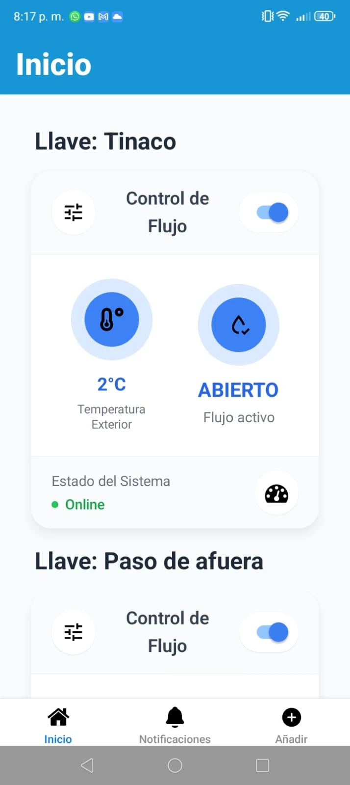
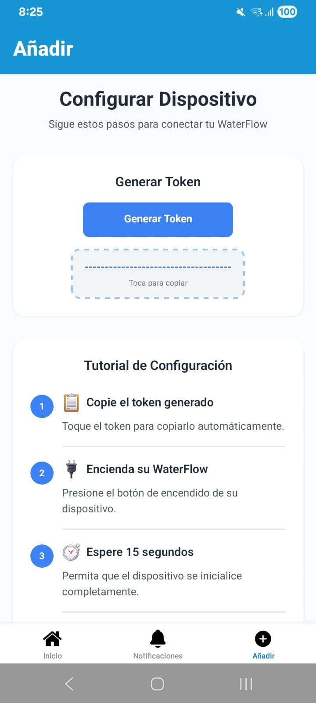
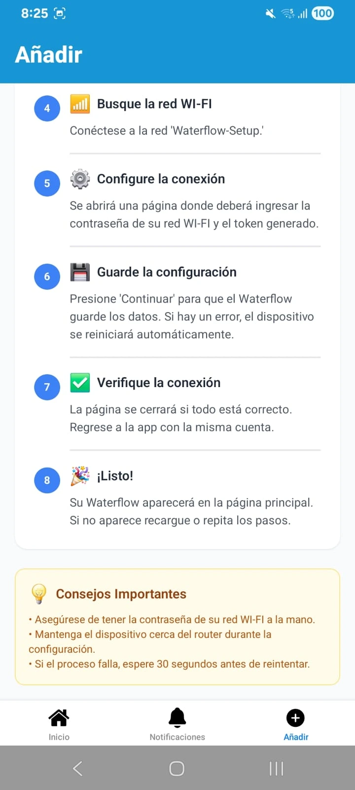
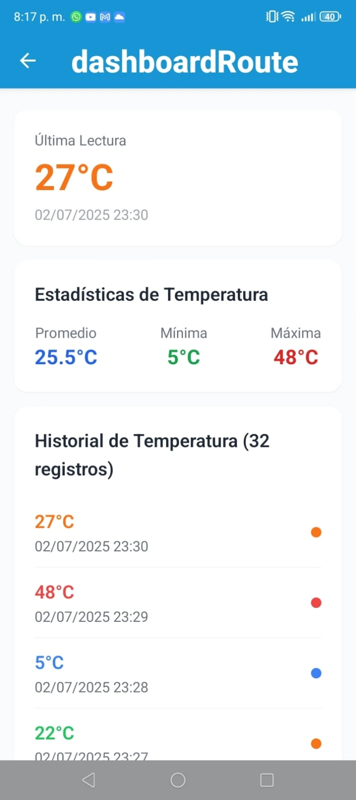
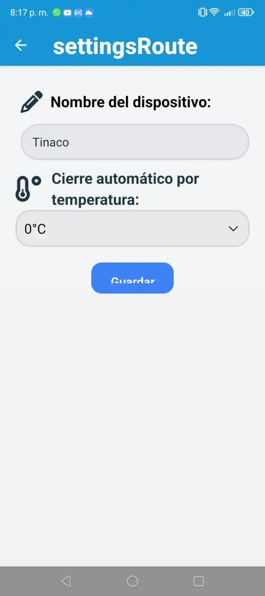

{%extends 'layouts/base_wf.html' %} {% block title %} WaterFlow {% endblock %}

{%block main%}

<main class="flex justify-center text-white w-full pb-10">
    <section class="flex flex-col items-center justify-center w-11/12 px-3 py-10 rounded-lg mt-20 gap-26">

        <!--HEADER OF THE TITLE-->
        <article id="miElemento" class="flex flex-col items-center justify-center gap-6 opacity-0 transform -translate-y-8 transition-all duration-700 ease-out">
            <header class="flex items-center justify-center gap-5">
                <h1 class="text-6xl font-bold">Bienvenido a WaterFlow</h1>
                <i class="fa-solid fa-water text-6xl mt-5 text-blue-600 font-bold"></i>
            </header>
            <p class="text-2xl text-gray-500 mb-4">"Controla el flujo de forma remota"</p>
        </article>

        <!--CARD AND CAROUSEL-->
        <article id="miElemento2" class="flex items-center justify-center gap-14 bg-gray-900/45 rounded-3xl p-10 opacity-0 transform -translate-y-8 transition-all duration-900 ease-out">
            <!--CARD-->
            <div class="flex flex-col w-96 h-10/12 shadow-lg gap-6">
                <div class="flex items-center gap-3 text-blue-700">
                    <h1 class="font-bold text-4xl">WaterFlow</h1>
                    <i class="fa-solid fa-droplet text-4xl"></i>
                </div>
                <div id="typewriter" class="text-lg text-gray-300 leading-8.5 whitespace-pre-wrap typewriter-cursor"></div>
            </div>

            <!--CAROUSEL-->
            <div class="carousel carousel-center bg-gray-300/30 brightness-85 rounded-box rounded-2xl space-x-7 px-4 py-6 w-[560px] h-[350px] hover:cursor-pointer hover:scale-105 transition-all duration-300">
                <div class="carousel-item">
                    
                </div>
                <div class="carousel-item">
                    
                </div>
                <div class="carousel-item">
                    
                </div>
                <div class="carousel-item">
                    
                </div>
                <div class="carousel-item">
                    
                </div>
                <div class="carousel-item">
                    
                </div>
            </div>
        </article>
    </section>
</main>

<style>
  @layer utilities {
    .typewriter-cursor::after {
      content: '|';
      animation: blink 0.7s steps(1) infinite;
    }
    @keyframes blink {
      0%, 100% { opacity: 1; }
      50% { opacity: 0; }
    }
  }
</style>

{% endblock %} 